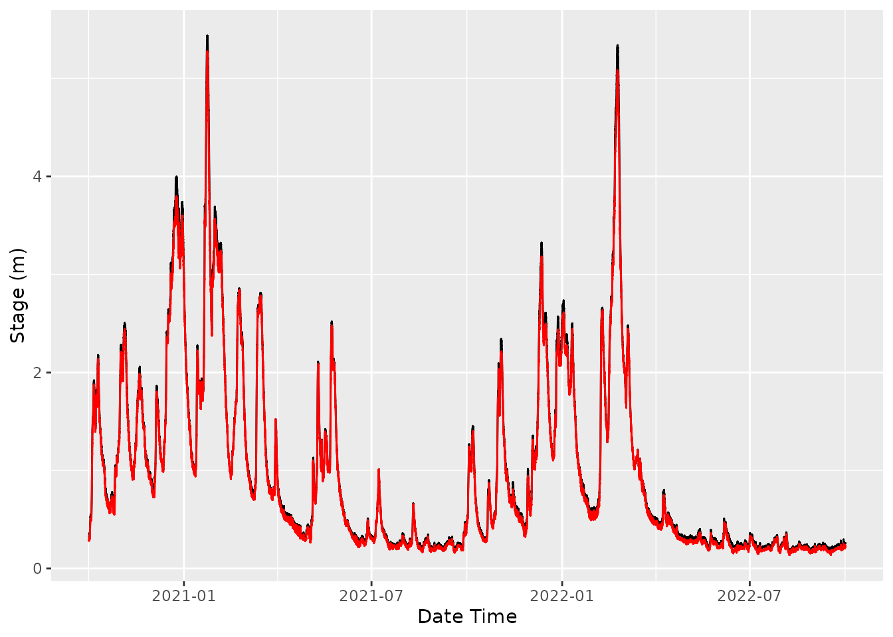

Ratings in riskyData
Stage discharge rating tables can be added and be applied to data in
the HydroImport containers.
Let’s download some stage data;
bewdleyStage <- loadAPI(ID = "2001",
measure = "level",
period = 900,
type = "instantaneous",
datapoints = "range",
from = '2020-10-01 00:00',
rtExt = TRUE)To access the rating use;
bewdleyStage$rating
#> NULLAs you can see the imported data doesn’t yet have any rating. To add
one we can use the addRating() method. This method has four
arguments that need to be filled (C, A, B, and max).
bewdleyStage$addRating(C = c(43.3123, 43.3123, 47.6218, 0.000668, 0.000668),
A = c(-0.171831, -0.171831, -0.117731, -8.604474, -8.604474),
B = c(1.44155, 1.44155, 1.38813, 5.139, 5.139),
max = c(0.359, 0.504, 5.23, 5.55, 999))This will now be displayed whenever you call the
HydroImport container or using $rating;
bewdleyStage
#>
#> ── Class: HydroImport ──────────────────────────────────────────────────────────
#>
#> ── Metadata: ──
#>
#> Data Type: Raw Import
#> Station name: Bewdley
#> WISKI ID: 2001
#> Parameter Type: Level
#> Modifications: NA
#> Start: 2020-10-01
#> End: 2024-05-02 11:00:00
#> Time Step: 900
#> Observations: 125709
#> Easting: 378235
#> Northing: 276165
#> Longitude: -2.321186
#> Latitude: 52.383072
#>
#> ── Observed data: ──
#>
#> dateTime value quality qcode
#> <POSc> <num> <char> <char>
#> 1: 2020-10-01 00:00:00 0.351 Good <NA>
#> 2: 2020-10-01 00:15:00 0.350 Good <NA>
#> 3: 2020-10-01 00:30:00 0.350 Good <NA>
#> 4: 2020-10-01 00:45:00 0.351 Good <NA>
#> 5: 2020-10-01 01:00:00 0.350 Good <NA>
#> ---
#> 125705: 2024-05-02 10:00:00 0.754 Unchecked <NA>
#> 125706: 2024-05-02 10:15:00 0.754 Unchecked <NA>
#> 125707: 2024-05-02 10:30:00 0.754 Unchecked <NA>
#> 125708: 2024-05-02 10:45:00 0.755 Unchecked <NA>
#> 125709: 2024-05-02 11:00:00 0.756 Unchecked <NA>
#> ── Rating data: ──
#>
#> C A B max maxFlow
#> <num> <num> <num> <num> <num>
#> 1: 43.312300 -0.171831 1.44155 0.359 1.738289e+01
#> 2: 43.312300 -0.171831 1.44155 0.504 2.462149e+01
#> 3: 47.621800 -0.117731 1.38813 5.230 4.882023e+02
#> 4: 0.000668 -8.604474 5.13900 5.550 5.485540e+02
#> 5: 0.000668 -8.604474 5.13900 999.000 1.814196e+12
#> For more details use the $methods() function, the format should be as
#> `Object_name`$methods()To apply the rating to the stage data use the rateFlow()
method;
bewdleyStage$rateFlow()
#> stage flow limb
#> <num> <num> <fctr>
#> 1: 0.351 17.00650 1
#> 2: 0.350 16.95963 1
#> 3: 0.350 16.95963 1
#> 4: 0.351 17.00650 1
#> 5: 0.350 16.95963 1
#> ---
#> 125705: 0.754 39.35944 3
#> 125706: 0.754 39.35944 3
#> 125707: 0.754 39.35944 3
#> 125708: 0.755 39.42213 3
#> 125709: 0.756 39.48485 3To set the outputs in a HydroImport container, set the
full argument to TRUE
bewdleyStage$rateFlow(full = TRUE)
#>
#> ── Class: HydroImport ──────────────────────────────────────────────────────────
#>
#> ── Metadata: ──
#>
#> Data Type: Rated flow based on stage/discharge rating
#> Station name: Bewdley
#> WISKI ID: 2001
#> Parameter Type: Flow
#> Modifications: Rated flow calculated
#> Start: 2020-10-01
#> End: 2024-05-02 11:00:00
#> Time Step:
#> Observations: 125709
#> Easting: 378235
#> Northing: 276165
#> Longitude: -2.321186
#> Latitude: 52.383072
#>
#> ── Observed data: ──
#>
#> dateTime value quality qcode
#> <POSc> <num> <char> <char>
#> 1: 2020-10-01 00:00:00 0.351 Good <NA>
#> 2: 2020-10-01 00:15:00 0.350 Good <NA>
#> 3: 2020-10-01 00:30:00 0.350 Good <NA>
#> 4: 2020-10-01 00:45:00 0.351 Good <NA>
#> 5: 2020-10-01 01:00:00 0.350 Good <NA>
#> ---
#> 125705: 2024-05-02 10:00:00 0.754 Unchecked <NA>
#> 125706: 2024-05-02 10:15:00 0.754 Unchecked <NA>
#> 125707: 2024-05-02 10:30:00 0.754 Unchecked <NA>
#> 125708: 2024-05-02 10:45:00 0.755 Unchecked <NA>
#> 125709: 2024-05-02 11:00:00 0.756 Unchecked <NA>
#> ── Rating data: ──
#>
#> C A B max maxFlow
#> <num> <num> <num> <num> <num>
#> 1: 43.312300 -0.171831 1.44155 0.359 1.738289e+01
#> 2: 43.312300 -0.171831 1.44155 0.504 2.462149e+01
#> 3: 47.621800 -0.117731 1.38813 5.230 4.882023e+02
#> 4: 0.000668 -8.604474 5.13900 5.550 5.485540e+02
#> 5: 0.000668 -8.604474 5.13900 999.000 1.814196e+12
#> For more details use the $methods() function, the format should be as
#> `Object_name`$methods()Rated stage
We can also use the same ratings to convert flow to stage;
## Load flow data
data("bewdley")
## Set a window to make data comparable
bewdley$window(start = "2020-10-01 09:00", end = "2022-10-01 08:45", export = "snip")
bewdleyStage$window(start = "2020-10-01 09:00", end = "2022-10-01 08:45", export = "snip")
## Add the rating to Bewdley
bewdley$addRating(C = c(43.3123, 43.3123, 47.6218, 0.000668, 0.000668),
A = c(-0.171831, -0.171831, -0.117731, -8.604474, -8.604474),
B = c(1.44155, 1.44155, 1.38813, 5.139, 5.139),
max = c(0.359, 0.504, 5.23, 5.55, 999)
)
## Calculate rated stage
ratedStage <- bewdley$rateStage()
ratedStage
#> stage flow limb
#> <num> <num> <fctr>
#> 1: 0.2804601 13.8 1
#> 2: 0.2849972 14.0 1
#> 3: 0.2804601 13.8 1
#> 4: 0.2827311 13.9 1
#> 5: 0.2895145 14.2 1
#> ---
#> 70076: 0.2386680 12.0 1
#> 70077: 0.2339097 11.8 1
#> 70078: 0.2291267 11.6 1
#> 70079: 0.2291267 11.6 1
#> 70080: 0.2291267 11.6 1We can compare against the previously imported stage data.
